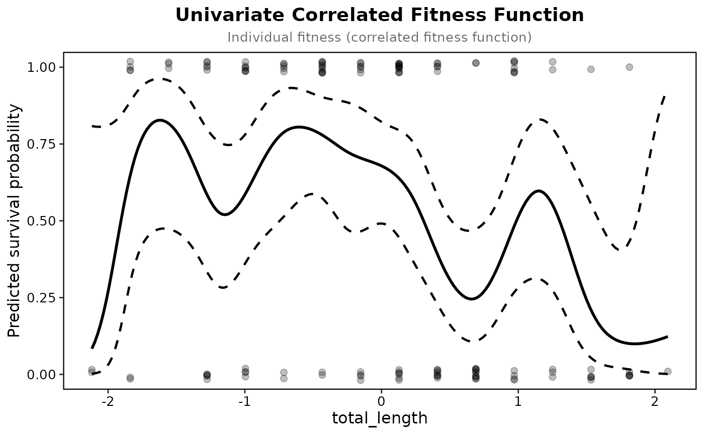

This function calculates a univariate correlated fitness function using a GAM smooth term.
The formula is w ~ f(z). Traits should be standardized BEFORE calling this function.
Usage
univariate_spline(
data,
fitness_col,
trait_col,
fitness_type = c("auto", "binary", "count", "continuous"),
group = NULL,
relative_col = NULL,
k = 10,
bs = c("cr", "tp", "ps"),
smoothing = c("GCV.Cp", "REML", "ML"),
bootstrap = FALSE,
n_boot = 1000,
by_group = FALSE,
count_family = c("poisson", "quasipoisson", "nb")
)Arguments
- data
A data frame containing fitness and trait measurements.
- fitness_col
A string specifying the name of the fitness column.
- trait_col
A string specifying the name of the trait column (must be numeric and standardized).
- fitness_type
A string indicating the fitness type:
"auto"(detect from the data, the default),"binary","count", or"continuous". Binary and count fitness are fitted on the raw values with a binomial or Poisson family; continuous fitness on relative fitness with a Gaussian one.- group
Optional string specifying a grouping variable. If provided, group fixed effects are included (none when it has only one level); rows with no group label are one more level.
- relative_col
Optional string naming a pre-computed relative fitness column to use for continuous fitness (e.g. one produced within groups by
prepare_selection_data).- k
Integer specifying the basis dimension for the smooth term. Default is 10.
- bs
Spline basis:
"cr"(cubic regression spline, the default),"tp"(thin plate) or"ps"(P-spline).- smoothing
How the smoothing parameter is chosen:
"GCV.Cp"(generalised cross-validation, the default, which mgcv applies in its UBRE form to binary and Poisson fitness and as plain GCV to quasi-Poisson; a negative binomial fit uses REML in its place),"REML"or"ML". The result'sspline_typenames the criterion mgcv used.- bootstrap
Logical; if
TRUEthe 95% ribbon is obtained by resampling individuals and refitting (Schluter 1988). The defaultFALSEuses the parametric Wald interval, which is fast; the bootstrap refits the splinen_boottimes.- n_boot
Integer number of bootstrap resamples used when
bootstrap = TRUE. Default is 1000.- by_group
Logical; if
TRUEfit each level ofgroupon its own rows and return a named list of fits, one per group. The defaultFALSEfits one curve with the group as a fixed effect. Prepare the data with the samegroupfirst, so that each group is standardised on its own.- count_family
Family for count fitness:
"poisson"(the default),"quasipoisson"or"nb", as incorrelated_fitness_surface(); the smoothing parameter is chosen under whichever is used. The result'sdispersionis the Pearson dispersion of the fit, and a Poisson fit warns when it is above 1.5.
Value
A list of class "univariate_fitness" containing the fitted GAM model, a prediction grid, and metadata.
Details
By default the fitness function is a penalised cubic regression
spline with the smoothing parameter chosen by generalised
cross-validation (UBRE for binary and Poisson fitness), following Schluter
(1988). bs and smoothing
set the family of curves and the criterion, to match the smoother of
another study; the amount of smoothing is still estimated from the data,
though the criterion can change it a good deal.
If mgcv's check suggests the basis dimension was too small a warning
says so; the check works on the residuals, which for survival carry too
little to test, so it is skipped there. With bootstrap = TRUE the
result depends on the random seed; call set.seed() first for a
reproducible ribbon.
Examples
prep <- prepare_selection_data(bumpus, "survival", "total_length")
uni <- univariate_spline(prep, "survival", "total_length")
#> Fitness type detected: binary
plot_univariate_fitness(uni, "total_length")

# a thin-plate basis with REML, to match another study's smoother
univariate_spline(prep, "survival", "total_length", bs = "tp", smoothing = "REML")$spline_type
#> Fitness type detected: binary
#> [1] "thin-plate spline (REML)"